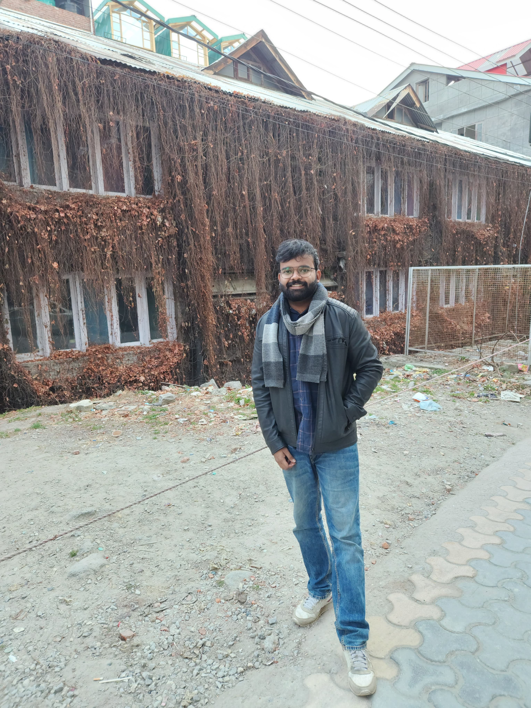

Ritik Verma
I'm a Backend Engineer
About
Welcome! I'm Ritik Verma, a graduate student with a strong background in Computer Science, currently pursuing an M.S. at the University at Buffalo. I have demonstrated abilities in creating state-of-the-art ML model architectures, developing database scanners, and collaborating with cross-functional teams to deliver impactful software solutions.
My journey blends strong academic grounding with hands-on professional engineering experience in backend development and full-stack projects using a variety of modern programming languages and technologies.
Backend Engineer & ML Researcher
- Birthday: 17 April 1999
- Phone: +1 (631) 366-9859
- Email: ritikver@buffalo.edu
- Age: 26
- Degree: Master of Science (M.S.)
Resume
Education
M.S. in Computer Science
Jan 2025 - Dec 2026
University at Buffalo (SUNY), Buffalo, New York
Coursework: Algorithms, Machine Learning, Computer Vision, Deep Learning, Distributed Systems, Data Models.
B.Tech in Information Technology
July 2018 - June 2022
Techno Main Salt Lake, Kolkata, India
Coursework: Data structures, Algorithm analysis, DBMS, Operating Systems, Computer Network, Compiler Design.
Technical Skills
- Languages: Java, Go, Python, JavaScript
- Frameworks: Maven, Mockito, JUnit, Agile (Scrum)
- Technologies: Github, AWS, React, Docker, Kubernetes
- Operating Systems: Windows, Linux (Ubuntu)
- Databases: MySQL, Cloudera, Redshift, Teradata, Snowflake
Professional Experience
Graduate Teaching & Research Assistant
May 2025 - Present
University at Buffalo
- Teaching Assistant: TA for CSE-474 Intro to Machine Learning.
- AIEmoCare: Architected a state-funded production platform using React (TypeScript), FastAPI, and TimescaleDB for time-series storage; deployed via Kubernetes and Docker.
- Real-Time Fusion Engine: Engineered a low-latency (200ms) ingestion pipeline using WebSockets, Redis Pub/Sub, AsyncIO, and NVIDIA Triton to orchestrate parallel GPU inference.
Backend Engineer (Contract)
July 2024 - November 2024
Mercor
- Achieved a 10% accuracy improvement on internal LLM benchmarks via automated data curation and hyperparameter optimization.
- Streamlined development workflows by containerizing environments.
Full Stack Developer Trainee
Feb 2024 - April 2024
Codelogicx
- Developed responsive e-commerce dashboards using React.js/Node.js and integrated RESTful APIs to reduce page load latency.
Associate Software Engineer
July 2022 - December 2023
Informatica
- Improved Redshift database scanner extraction efficiency by over 40% and added Materialized view support.
- Built a Cloudera (Hive CDP) Scanner from scratch, adding unit/integration tests and backend support.
Academic Projects
Here are some of my recent technical architectures and research frameworks.
BrainDiffNet: Generative AI Framework for EEG-to-Image
Python, PyTorch, Docker (Oct 2025)
Engineered a production-ready, modular CLI framework decoupled into three stages. Reduced trainable parameters by 90% and minimized GPU memory overhead by implementing FP16 precision. Integrated MMDiT and Temporal Masked Autoencoders for high-dimensional time-series data.
AtomSigNet: Biosignal Diffusion with Markovian Reasoning
Python, PyTorch, TCN (Jan 2026)
Filed a US Patent for a Wearable Biosignal System. Developed a Markovian Reasoning Engine to autonomously identify "logic gaps" in sensor data, triggering conditional diffusion for artifact correction. Achieved 91% SOTA accuracy on WESAD/CASE datasets.
AFairDNet: Fair Multisensor Emotion Recognition System
Python, PyTorch, Hugging Face (Aug 2025)
Engineered a "Chain-of-Thought" control loop evaluating synthetic signal fairness using CLIP, dynamically refactoring LLM prompts to correct bias. Co-developed the complete framework (accepted at BSN 2025), outperforming SOTA baselines by 4% F1-score.
SynCoT: Synthetic Data Pipeline
Python, PyTorch, Gemini API (Sep 2025)
Architected a state machine coordinating a Generator, Evaluator, and Reasoner to autonomously correct data bias. Built a robust text-to-signal pipeline utilizing BERT tokenization and a custom 1D UNet, integrated with the Google Gemini API to parse fairness scores.
Contact
Mobile:
+1 (631) 366-9859